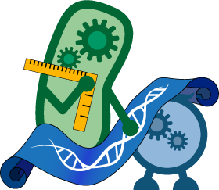

Taking A Step Back - Human Practices Inspired Our Project!
Before starting our project, the Calgary iGEM team felt it would be important to answer a few questions about how FRED and OSCAR could be applied in the oil and gas sector.

Would oilsands industry be interested in a biosensor and bioreactor for remediation purposes? Yes! Our meeting with the Oilsands Leadership Initiative (OSLI) has affirmed that industry is interested in potentially using synthetic biology for remediation of toxins.
What would people think about using synthetic biology in the oilsands? Do they have any concerns about its implementation? We consulted with two professionals working in biotechnology and ecological development in Alberta. Both of them emphasized that while the concept sounds great, it is important that we keep in mind the safety and ethics of our project.
in the oilsands? Do they have any concerns about its implementation? We consulted with two professionals working in biotechnology and ecological development in Alberta. Both of them emphasized that while the concept sounds great, it is important that we keep in mind the safety and ethics of our project.
How can OSCAR and FRED be designed with safety in mind? From our various conversations our team looked toward both physical and genetic design considerations to ensure that from the outset, both FRED and OSCAR were designed in a safe and functional way. This involved incorporating physical containment features in the biosensor and bioreactor designs and employing biological kill switch mechanisms.
How can we teach people more about FRED, OSCAR, and Synthetic Biology? From our interviews it was clear that not many people knew about synthetic biology or its applications in the oil and gas sector. For this we partnered with the Telus Spark Centre, the local Science Centre in Calgary, to help communicate synthetic biology to them. We also developed a video game that had its debut at the centre and educated adults and kids on synthetic biology in a fun way!